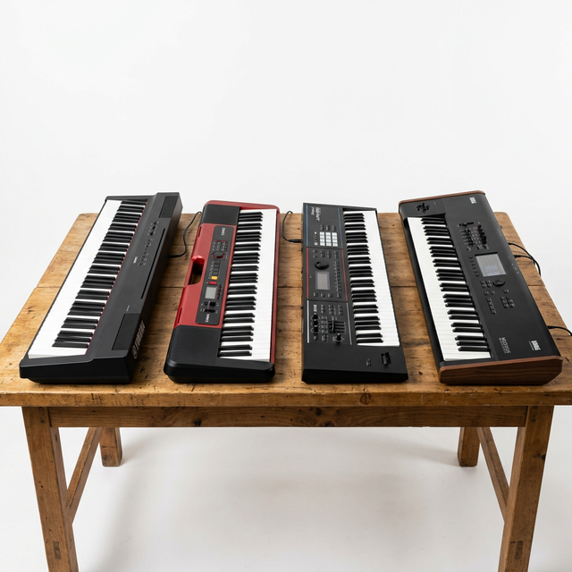

Looking for a reliable piano or keyboard repair service in Ahmedabad? Whether you own a Yamaha PSR, a Casio Privia, a Roland GO:KEYS, or a professional Korg workstation, finding someone who truly understands your instrument's internals can be challenging. At Maa Harsiddhi Electronics in Amdupura, we have been repairing keyboards and pianos of every brand for over 20 years — and we treat every instrument like our own.
This comprehensive guide covers everything you need to know about getting your keyboard or piano professionally repaired in Ahmedabad — from common issues across brands to our complete range of repair services, and answers to the most frequently asked questions.
Table of Contents
Brands We Repair
Our technicians — Navinbhai and Dharmesh — have hands-on experience with virtually every keyboard and piano brand available in India. No matter the model, age, or complexity, we have the tools, parts, and knowledge to diagnose and fix your instrument.
Yamaha
PSR, P-Series, Clavinova, DGX, Arius
Casio
Privia, CTK, CT-X, CDP, Celviano
Roland
GO:KEYS, FP, JUNO, RD, FA Series
Korg
Kross, Pa Series, Kronos, B2, SV-2
Kawai
ES Series, CN, CA, Digital & Acoustic
Nord
Stage, Electro, Piano, Lead Series
Kurzweil
SP, PC, Artis, Forte Series
Other Brands
Akai, M-Audio, Alesis, Suzuki & more
Even if your brand is not listed above, please reach out to us. We have successfully repaired keyboards and electronic instruments from dozens of lesser-known and regional manufacturers as well.
Common Keyboard & Piano Problems
Over our 20+ years of experience, we have encountered — and solved — virtually every issue a keyboard or piano can develop. Here are the most common problems customers bring to us:
Key-Related Issues
- Dead or unresponsive keys — usually caused by worn rubber contact strips or broken hammer sensors
- Sticking or sluggish keys — often due to dust accumulation, humidity damage, or worn key pivot mechanisms
- Keys producing wrong notes — typically a keybed logic issue or damaged ribbon cable connection
- Inconsistent touch sensitivity — faulty velocity sensors or calibration issues in weighted-action keyboards
Sound & Audio Issues
- No sound output — can be caused by blown internal speakers, damaged amplifier circuit, or faulty DAC chip
- Distorted or crackling sound — usually indicates a failing capacitor, dirty output jack, or damaged speaker cone
- Intermittent cutting out — often a loose solder joint on the main PCB or a damaged volume potentiometer
- Headphone jack not working — worn jack socket or broken internal switching mechanism
Power & Electronic Issues
- Keyboard not turning on — could be a blown fuse, faulty power adapter, or damaged voltage regulator
- Random shutdowns — often caused by overheating components or unstable power supply circuits
- Display issues — non-functioning LCD screens, dim backlighting, or garbled display output
- Water or liquid damage — requires immediate PCB cleaning, component-level diagnosis, and corrosion treatment
Our Complete Repair Services
At Maa Harsiddhi Electronics, we offer end-to-end repair services for all types of pianos, keyboards, and associated electronic equipment. Here is a complete overview of what we can do:
| Service | What We Fix |
|---|---|
| Key Replacement | Individual key or full keybed replacement with OEM-compatible parts for any brand |
| Rubber Contact Strip Repair | Cleaning or replacing worn carbon contact strips to restore key responsiveness |
| Circuit Board Repair | SMD-level soldering, chip replacement, and trace repair on main PCB and sub-boards |
| Speaker Replacement | Replacing blown or distorted internal speakers with matched-spec high-quality replacements |
| Power Supply Repair | Internal voltage regulator, capacitor, fuse, and transformer diagnosis and repair |
| Output Jack Repair | Headphone jack, audio output, USB, and MIDI port repair or full replacement |
| Display / LCD Repair | Screen replacement, backlight repair, ribbon cable reseating, and display driver fixes |
| Water Damage Recovery | Full disassembly, ultrasonic PCB cleaning, corrosion treatment, and component-level testing |
| Amplifier Repair | Tube amp, solid-state amp, powered speaker, and PA system troubleshooting and repair |
| Annual Maintenance | Preventive deep cleaning, lubrication, contact inspection, and full performance testing |
For pricing and estimated turnaround time, please call us or visit our workshop. We provide a free diagnostic assessment so you know exactly what's needed — no obligation, no hidden charges.
Want to Know the Cost?
Every repair is unique. Bring your instrument to our Amdupura workshop or describe the issue over a call — we'll diagnose it for free and give you an honest, no-obligation quote before any work begins.
Why Choose Maa Harsiddhi Electronics?
Ahmedabad has several electronics repair shops — so why do musicians and music schools across the city consistently choose us? Here's what sets us apart:
20+ Years of Hands-on Experience
Navinbhai and Dharmesh have collectively spent over two decades mastering electronic repairs. We've seen — and fixed — it all.
All Brands, All Models
From beginner Casio keyboards to professional Korg Kronos workstations — we understand the internal architecture of every major keyboard platform.
Honest & Transparent Pricing
No hidden fees, no unnecessary part replacements. We tell you exactly what's needed upfront and provide a written estimate before starting work.
Genuine Replacement Parts
We only use high-quality, OEM-compatible parts. This ensures your instrument sounds and performs exactly as the manufacturer intended.
Fast Turnaround
Most repairs are completed within 1–3 business days. We understand that musicians can't afford extended downtime — your instrument gets priority treatment.
Areas We Serve in Ahmedabad
Our workshop is centrally located in Amdupura, D Colony, making us easily accessible from most parts of Ahmedabad. We serve customers from the following areas and beyond:
Workshop Address: 1321-10, Darji Ni Chali, Amdupura, D Colony, Ahmedabad, Gujarat 382345, India
Contact: +91 9624960835 (Phone & WhatsApp)
Frequently Asked Questions
Ready to Get Your Instrument Fixed?
Don't let a broken key or faulty circuit keep you from making music. Contact us today for a fast, affordable, and professional repair.